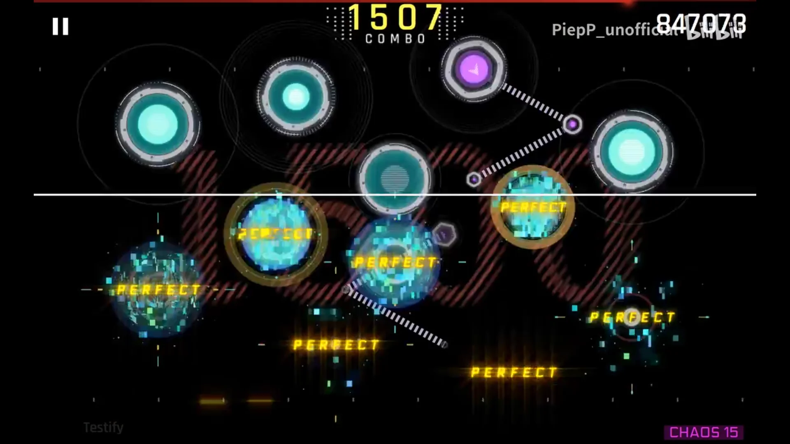

音乐节奏类游戏综述
一、引言
1.1 背景介绍
我们喜欢《We Will Rock You》的“咚咚啪”，觉得踩点的枪声音乐有趣......这正是因为人类可以理解、预测节奏，并从与节奏同步的过程中获得快感。在音乐领域，节拍（Metre）是拍子周期性的重复，是“动次打次”的循环，是我们规律的心跳；而节奏（Rhythm） 则是节拍中不同音符（Note）按强弱、长短关系形成的组合式重复，是音乐的躯干。
面对特定节奏，通过感知与节拍同步的音符，我们能够在大脑中构建起对应的模式序列，并借此预测下一个音符会在何时到来。成功的预测会带给参与者快感，而这种快感又会进一步刺激参与者继续感知节奏。在这样的正反馈循环中，我们逐渐完成了对节奏的记忆与同步，并源源不断地获得“完成模式识别”的成就感。而这，正是节奏能给我们带来的最原初的乐趣之一。
2021 年，游戏设计师 Mental Checkpoint 曾在 YouTube 发布题为《为什么节奏游戏在过去 20 年间从未改变》（Why Rhythm Games Haven't Changed for 20 Years），表明绝大多数节奏游戏仍以考验玩家输入的时间精准度为核心玩法，它们没能充分调动玩家感知、预测和记忆节奏的原初乐趣。
而在当下，陆续涌现出一些以“节奏的原初乐趣”为出发点而设计的节奏游戏，它们通过引导玩家理解节奏模式，创造出各种新鲜多变的玩法。它们可以称为“新节奏游戏”。
1.2 目的与意义
- 深入理解游戏类型的兴起与发展
通过追溯其历史，我们可以揭示音乐游戏是如何逐渐崛起为一种独特的娱乐形式的。了解其起源和演变过程，对于把握其核心特征以及成功因素具有重要价值。 - 探讨音乐与游戏融合的创新可能性
音乐节奏类游戏是音乐和游戏元素巧妙融合的产物，其独特之处在于通过参与性的互动，将玩家引入音乐的创造性过程。研究这一领域的目的在于深入挖掘音乐与游戏融合的创新可能性，探讨如何通过游戏的形式推动音乐的表达和传播，进而影响音乐文化的演变。 - 提升用户体验与沉浸感的理论基础
音乐节奏类游戏通过要求玩家在视觉和听觉上与音乐同步，为玩家提供了一种全身心投入的娱乐体验。研究这一游戏类型的目的之一是构建其用户体验与沉浸感的理论基础，以便游戏设计者更好地理解和优化游戏元素，提高用户参与感和满足感。 - 为游戏设计提供有益的经验教训
分析现有音乐节奏类游戏的优缺点，可以为未来游戏设计提供有益的经验教训。通过了解不同作品的成功之处和失败经验，游戏开发者可以更明智地选择设计元素、游戏机制以及技术支持，从而提高他们的游戏在市场上的竞争力。 - 促进跨学科研究与创新
音乐节奏类游戏融合了音乐、视觉艺术、技术等多个领域的元素，因此研究这一领域有助于促进跨学科研究与创新。它为音乐学、心理学、游戏设计、计算机科学等领域的学者提供了一个共同探讨的平台，有助于推动不同学科之间的合作与交流。
1.3 研究方法
- 文献综述： 通过对相关文献的综合分析，可以了解音乐节奏类游戏的发展历程、定义、分类以及先前研究的主要发现。这有助于建立研究的理论框架和背景。
- 案例研究： 对音乐节奏类游戏的典型案例进行深入研究，分析它们的设计元素、游戏机制、用户体验等方面。通过案例研究，可以深刻理解成功游戏的关键因素和可能存在的挑战。
- 技术分析： 分析音乐节奏类游戏的技术实现，包括游戏引擎、音频处理、图形效果等方面。这有助于理解技术对游戏体验的影响，并为未来的技术创新提供指导。
- 数据分析： 利用大数据分析方法，例如通过游戏平台的数据统计，分析玩家的行为模式、流失率、受欢迎的音乐风格等，以揭示游戏在大规模用户中的影响力和趋势。
二、音乐节奏类游戏的定义与分类
2.1 游戏类型概述
音乐游戏（英语：music game，缩写MUG、日语：音楽ゲーム，缩写音ゲー）或称节奏游戏（英语：rhythm game），是一种游戏类型，或指属于这个类型的游戏。在音乐游戏中，玩家需要配合音乐节奏、根据视觉提示做出正确的反应。通常，玩家的反应和节奏越吻合，得分越高。音乐游戏是一种电子游戏，玩家在音乐游戏中听到对应的音符、看到相应的视觉提示时，应以正确的顺序输入对应的指令。由于玩家需要全神贯注的倾听、记忆和反应，因此在音乐游戏中，玩家的沉浸感通常较强，初期的音乐游戏的游玩方式更多是对演奏（如IIDX类似于DJ，Jubeat类似于打击垫等）或跳舞（如DDR、DEAC、maimai）等的模拟体验。现阶段的音乐游戏无论是在体量，游玩模式还是内容上都在不断丰富。
需要注意的是，目前音乐游戏并没有非常准确且权威的定义，但大多数核心玩家认为音游需包含明确的谱面、判定区域、判定时间、音乐节奏等要素。一些具备上述一部分要素、但不完全满足的游戏常被称为“类音游”。也有人称呼此类音游为“亚音游”，但也有人认为“亚音游”有歧视的含义。
注意：类似Synthesia Piano、Piano From Above这样的键盘模拟软件，通常不被视为音乐游戏，尽管其模拟钢琴的键盘和瀑布流谱面和常见音乐游戏的纵向下落式谱面十分相似，且有些此类软件具有和音乐游戏类似的打分机制。
2.3 游戏元素与特征
音乐节奏类游戏通过将音乐与互动性相结合，为玩家提供了一种独特的娱乐体验，强调了对音乐节奏的感知和反应。它们也通常具有以下特征：
-
谱面设计： 游戏中的谱面是由一系列音符或符号组成的，这些符号通常按照音乐的节奏和旋律排列。玩家需要在游戏进行过程中根据这些谱面做出相应的操作。
-
判定区域： 游戏屏幕上通常会有一个或多个判定区域，用于显示玩家需要做出反应的位置。音符或符号从屏幕的上方或其他方向滑落到判定区域，玩家需要在合适的时间内做出相应的操作。
-
判定时间： 游戏对于玩家操作的判定时间非常关键。玩家需要在音符或符号进入判定区域的瞬间做出正确的反应，以获得高分。
-
音乐节奏： 游戏的核心是与音乐的节奏相协调。音符的出现和玩家的操作需要与背景音乐的节奏紧密配合，玩家的成功通常取决于他们对音乐的敏感性和对节奏的准确感知。
-
游戏模式： 音乐节奏类游戏可能具有不同的游戏模式，这些模式可能涉及不同难度级别、不同类型的音乐、多人合作或对战等。这种多样性有助于吸引不同层次和类型的玩家。
-
反馈机制： 游戏通常会提供即时的视觉和听觉反馈，以告知玩家他们的操作是否准确，并根据表现给予评分。高效的反馈机制对于提高玩家的投入感和挑战性至关重要。
-
音乐选择与多样性： 音乐节奏类游戏通常提供多样性的音乐曲目，涵盖不同风格和流派的音乐。这有助于吸引更广泛的受众，使游戏更具吸引力。
-
个性化和社交互动： 一些音乐节奏类游戏允许玩家个性化他们的游戏体验，例如选择喜爱的音乐、自定义角色或界面。此外，社交互动元素，如排行榜、多人对战等，也是这类游戏的常见特征。
三、主题分析
3.1 音乐与游戏的结合
音乐节奏游戏，是一类挑战玩家节奏感的音乐动作游戏。玩家需要根据音乐的节奏对画面中出现的模块进行点击、滑动或控制物品进行左右移动，并以此获得分数。音乐节奏游戏和音乐游戏并不相同；音乐游戏包含了音乐节奏游戏、乐器模拟器等等游戏，而音乐节奏游戏最突出的特征在于玩家的操作是随着系统设定的音符节奏来操作的。
起步
世界上第一款“类音乐游戏”是1978年发行的以实体游戏机为载体的游戏《Simon》：在Simon游戏中，设备上的按键灯会以随机顺序亮起并伴随着音效，此时玩家需要依照按键亮起的顺序和次数点击设备，成功之后进入下一组。这是在游戏核心机制中试图将音符、节奏等要素与指令相结合的最早的尝试。
1996年，索尼在PS平台发行的《Parappa the Rapper》（啪啦啪啦啪）是公认的世界上第一款音乐游戏：玩家需要根据游戏中的说唱音乐节奏结合UI提示，在恰当的时机输入相应的指令。虽然游戏的曲库并不丰富，UI也让玩家难以适应，但其凭借全新的游戏玩法，在全世界取得了近140万的销量。
1997年，KONAMI发行的《Beatmania》以前所未有的下落式玩法席卷全球，在全世界取得了百万销量。其1999年的续作《Beatmania IIDX》更是延续至今，目前已发行了29代，经久不衰。
发展
在音乐游戏开始在市场上取得成功时，不同厂商针对着游戏玩法作出变革，包括为移植/创作其他平台上的音乐游戏作出创新。部分厂商开始加入角色、动画和故事等元素，希望能令玩家有更好的投入感。
2001年，BANDAI NAMCO发行的《太鼓之达人》简化了输入操作，采用日本鼓“敲打鼓面”和“敲打鼓边”两个动作作为游戏玩法。并创作造形可爱的角色。太鼓之达人系列推出至今已发行在各平台上。
2004年，SEGA发行的《时尚魔女 LOVE AND BERRY》首次尝试将卡牌元素加入音乐游戏中，玩家需要通过收集卡片来提升「时尚指数」以获取更高综合分数。《美妙旋律》、《偶像活动》等现时仍进行的大型企划亦先后在2010年，2012年推出街机端社交卡牌类音乐游戏。
成熟
街机和掌机音乐游戏在稳步发展的同时，轻触式屏幕和移动设备的出现颠覆了音乐游戏的游戏玩法，令输入指令的方式更多元化。
2010年，KONAMI发行的《Reflec Beat》是首批采用轻触式屏幕输入的音乐游戏，玩家需要在屏幕上的弹珠到达指定位置后作出点击或长按等动作。
2012年，SEGA发行的《maimai》将传统按键和轻触式屏幕混合，玩家同时需要进行两项指定的输入。
2008年-2011年，在移动端出现之际，主要的移动端音乐游戏都是移植作品，包括《Rock Hero》系列、《Guitar Hero》系列、《O2Jam Analog》、BEMANI系列等。
普及
智能电话及移动设备的普及令大量移动端音乐游戏出现，逐渐取代定位相同的掌机端音乐游戏。同时，音乐游戏的营运模式由每一局付费游玩逐渐变为付费曲包或付费道具等形式。
2012年，雷亚发行的《Cytus》是少数目前仍能游玩而年代久远的移动端音乐游戏之一，同时亦是首次用音乐去描绘角色和叙述完整故事，其续作《Cytus II》至今亦承传其游戏玩法。
2013年，KLab Games发行的《LoveLive!学园偶像祭》是世界上首款移动端社交卡牌类音乐游戏，成功令当中的卡牌元素和音游元素互相融合，对后世其他社交卡牌类音乐游戏有重要影响力，其续作《LoveLive!学园偶像祭2 MIRACLE LIVE!》亦承传其机制。
2016年，CREAPPTIVE Co., Ltd.发行的《BEAT MP3 for YouTube》运用人工智能分析Youtube音频，自动产生音乐游戏谱面但是谱面质量成疑。
现状
直至今日，音乐节奏游戏已在各种平台上占有了自己的“一席之位”：不限于往日的街机端、主机端或稍晚出现的PC端，如今以“方便”与“轻量”为理念的移动端音乐游戏更是占据了音乐游戏的“半壁江山”；同时随着音乐游戏知名度的提高以及Unity等游戏制作程序的普及，由同人社团制作的PC端、移动端的高质量音乐游戏越来越多。不限于往日的几种主要玩法，音乐游戏如今更是在游玩方式、游戏平台与游戏质量等方面不断发展提高。
随着街机游戏制作技术的进步以及触碰式屏幕的出现，街机游戏不仅在游戏玩法上变得多元化，在技术层面上也使游玩体验极大提升。在信息时代高速发展的今天，街机音乐游戏不但没有落后于时代，信息流通与街机音游独有的体验感反而使得更多人开始了解并接触街机音乐游戏，扩大了街机音乐游戏的玩家基础。
主机端音乐节奏游戏则保持了一定程度的玩家群体，并在VR终端技术逐渐成熟并普及后，该技术开始与核心玩法结合碰撞，相信将能产生更多不同类型的作品。
3.2 游戏的节奏感
传统谱面：判定线+音符流，基于反应而非预测
1996 年，日本游戏设计师松浦雅与说唱歌手罗德尼·格林布拉特（Rodney Greenblat）联手打造出世界上第一款节奏游戏《Parappa the Rapper》，开创了前所未有的玩法：玩家需要跟随背景音乐和屏幕提示适时按键，以匹配说唱音乐的节奏。
火爆的市场反馈引得各大厂商争相效仿，陆续诞生了《Beatmania》《GuitarFreaks》等同类作品。玩法层面，它们都以“输入窗口挑战”为核心：每个音符都有对应的输入时间段（时间窗口），玩家需要根据指令在时间段内准确响应音符，系统通过判定玩家反应的精准程度给出对应的分数评价。
从那时至今，绝大多数节奏游戏都将这种“输入窗口挑战”作为核心玩法：无论是十几年前大红大紫的《Dance Dance Revolution》《Guitar Hero》，还是现在百花齐放的《Osu!》《Cytus》《Deemo》《Phigros》《Arcaea》等，无一例外。
这些游戏的视觉呈现通常都会包含谱面（Beatmap 或者 Chart，即一连串的音符流）与判定线（Judgement Line）。当谱面中运动的音符恰好抵达判定线位置时，玩家需要抓住时机做出对应的反应（按键、滑动屏幕或使用其他特殊控制器）。这种判定线与音符流组合的设计让“输入窗口挑战”与音画反馈相辅相成，玩家对音乐节奏的感知被进一步强化，最终在“节奏感”的帮助下享受与音乐同步的快乐。
但是，如果我们以前文提到的“模式识别”视角去审视此组合，会发现它更多地是在考验玩家的反应能力，而非引导玩家预测节奏。也就是说，基于“判定线+音符流谱面”的节奏游戏可以不依赖音乐节奏本身进行，玩家只凭借对谱面音符的视觉反应，也能完成输入挑战。
在同类作品中，谱面呈现各有创意，但谱面设计本质上是一种关卡设计，它仅影响玩家的游玩内容而无法改变核心玩法。因此，无论判定线如何位移（加速、平移、旋转）、音符流的呈现方式如何变化（渐变出现、从任意方向靠近、移动速度改变），玩家一旦失去视觉提示，游戏本身便难以正常进行。反过来说，即使只剩下视觉提示并移除所有音频内容，游戏仍旧可玩。
谱面判定的输入挑战更像是动作游戏的精准时间挑战（例如《只狼》中的弹刀、《鬼泣》中的一刀三红、《怪猎》中的居合无敌帧等）：玩家在某个精确时间做出特殊动作会带来特殊的正反馈。而也正如动作游戏中玩家依靠观察敌人前摇以完成应对一样，基于“判定线+音符流谱面”的节奏游戏为玩家提供的乐趣根植于玩家对齐音画的过程，而非感知节奏得到的理解。

尽管，就最终效果而言，这类游戏依然可以提供给玩家视听上的综合节奏反馈，但是，由于玩家不需要去预测并分析节奏本身的规律和变化，只能被动地响应节奏，这极大限制了节奏游戏玩法的丰富性。相较之，下文将要介绍的“新节奏游戏”则跳出“判定线+音符流”这一组合的限制，运用别出心裁的新谱面或是源于节奏的新玩法，将玩家的注意力重新集中到音乐节奏本身之上，意图让玩家完整感受“识别并理解节奏模式”的乐趣。
非传统谱面：间接暗示输入窗口位置
改换标准后，“新节奏游戏”的乐趣不需依赖玩家的即时反应，而重在培养玩家对音乐的感知，逐步理解音乐的节奏。但设计者应如何引导玩家认清当前的节奏模式，并提供合适的挑战以验证玩家对节奏的预测呢？一种思路是，不使用判定线与音符流构建游戏的主体画面，从而不直接显示输入窗口的位置。
《节奏天国》便是一个例子：它没有任何判定线与音符流，而是将一系列主题各异的动画片段作为游戏画面。这些风趣幽默的动画能够快速传递游戏的叙事信息，而当动画与音乐结合时，玩家便可迅速理解节奏与动画演出之间的联系，并随之形成对节奏的预测。例如“采访摔跤手”关卡，玩家需要理解“记者提出问题”这一行为会占用两个拍子的时间，借此准确预测下一拍的时机，并做出“摔跤手回答问题”的答复。通过精心设计的动画序列，《节奏天国》成为了一款易于上手，直接考察玩家预测节奏能力的游戏。
受到《节奏天国》启发的《节奏医生》使用了特化谱面的设计思路，其核心玩法非常简单：游戏的谱面是一条分成 7 个部分的线段，每部分在对应的节拍上都会出现明显的视觉提示，玩家只需在每个重复段的第七拍完成输入即可。虽然可以通过观察线段了解输入窗口的位置，但大量复杂的音画演出（移动游戏画面窗口，故障艺术干扰等）会搅乱玩家的视觉，让玩家无法正常获知输入时机，从而将注意力集中在记忆节拍上，最终完成输入挑战。
以上两款游戏并没有用“音符流+判定线”在视觉上直观呈现输入挑战，而是通过特殊的画面表现间接暗示输入窗口的位置。这种“暗示”设计引导玩家预测节奏，同时也在考察玩家的预测能力，进而帮助玩家享受模式识别的乐趣。
3.3 用户体验与沉浸感
想要深刻了解音游带给玩家的体验，首先得了解单纯的音乐带给听众的体验。
人类为什么喜欢听音乐？这似乎是一个难题。音乐给我们带来的快感，不同于进食、酣睡、恋情之类人类生存繁衍所必要的快感激励。音乐是什么必须资源吗？人类有必要为听到好听的音乐而获得愉悦吗？
- 听觉响应
乐音，本质上就是带频率的某种声音，可以用以下这个等式来概括
乐音 = 频率 × 音色× 合理组合
既然本质是声音，人类必然无时无刻不在接收与处理。人类在进化的过程中遇到了太多的声音，而漫长的进化与适应足以让人类为每一种声音打上Tag，储存在DNA中，遗传给后代。
比如，百灵鸟的叫声，混杂着微风穿过树林的沙沙声，加上溪水潺潺的声音，会被人类认为是安详、平静的声音；而天空惊雷乍响，暴雨顷刻而至，狂风怒号呜咽，则被人感知为阴郁、灾难的声音。
这些音色、频率，都被DNA一丝不苟地储存在某处，届时只要我们听到了这些声音的碎片，相应的感知就会被DNA调动出来，呈现在大脑中。这些是根植于听觉之中的，无法更改的生理基础。而作曲家就可以根据这种基础，来创造千变万化的听觉体验。
- 可预测激励
人脑喜欢识别并预测模式...当我们正确预测了音乐接下来的模式时，我们的奖励系统会被触发；如果我们预测了会听到一定水平的音乐然后听到更高水平的，还会触发“意外之喜”对应的追加反应。因此，音乐中出现的稳定的节奏，就会不停地奖励人们对下一节拍的正确预测，而变化的杂乱的节奏就容易让人产生不适。
各种“感受”的叠加，形成了完整的游戏体验与沉浸感。
音乐体验：可预测激励
可预测激励是一种心理学概念，指的是个体在执行某项任务或行为时，能够准确预测到将获得的奖励。这种激励形式通常会引发积极的心理反应，增强个体对任务的动力和参与度。在游戏设计中，可预测激励是一种有效的手段，用于激发玩家的兴趣、提高参与度，以及增加游戏体验的愉悦感。
我们会发现非常多的音游要求玩家进行“跟随音乐的操作”，这构成了音游的基本操作范式。具体的例子就是各类节奏游戏，按照节奏消除不同的方块，节奏越精准得分越高。由于节奏这一音乐元素非常符合上述我们提到的“可预测激励”，玩家在这种带感的消除中可以获得非常强烈的掌控感与愉悦感
可预测激励在游戏中有很多应用：
-
任务奖励预告： 游戏设计者可以提前向玩家揭示完成特定任务后将获得的奖励。这可以通过任务列表、奖励图标或者系统通知等方式进行。这样的设计帮助玩家在进行游戏任务时，提前知晓可能的回报，从而增加动机和期待感。
-
等级提升奖励： 在许多游戏中，玩家通过完成任务、赢得比赛或者获得经验来提升等级。设计者可以设置在每个等级达成时都有一定的奖励，例如新技能、虚拟物品或者特殊称号。这种可预测性的奖励系统鼓励玩家持续参与游戏，以达到下一个可预测的奖励阶段。
-
定期活动奖励： 游戏中的定期活动，如每日任务、周常活动等，可以设定固定的奖励。玩家可以在特定的时间点期待到这些奖励，增加他们对游戏的粘性。这也与人类大脑对于周期性奖励的强烈反应相符。
-
虚拟经济奖励： 在游戏中引入虚拟货币、道具或者其他经济元素，将其与任务、成就等相结合，形成可预测的奖励体系。玩家通过参与游戏活动，可以累积这些资源，进而用于购买或升级虚拟物品。
-
成就系统奖励： 游戏中的成就系统为玩家提供了一系列明确的目标。完成这些成就时，可以获得事先设定好的奖励。这种可预测性奖励系统对于追求完美主义的玩家特别有吸引力。
音乐体验：朦胧感知
音乐最为强大的属性在于其艺术性，音乐能通过不同的艺术手法营造举不胜举的场景与气氛，从而使得音乐成为故事的良载体。所以有非常多内容驱动的音游，叙述或温馨或感人，情节或跌宕或热血，相对于3A大作抑或是VR这种沉浸式游戏体验，音游的朦胧式体验别有一番风味
游戏体验：上瘾模型
音游的实质仍然是游戏，因此能在游戏中承载的元素往往也可以在音游中找到。比如说我们熟悉的氪金机制，超值首充或是氪金解锁氪金限定曲目；养成元素，在音游中往往是升级解锁人物抑或是解锁等级限定曲目；打卡元素，比如说每周登录送道具等等。这些元素让玩家产生细小而廉价的愉悦，达成玩家留存的目的。
游戏性：马斯洛需求模型
在音游中最普遍出现的系统是关卡系统，这很好地契合了马斯洛需求理论中的“自我实现”的需求。一般来说，想要拿到一个关卡的好分数，需要玩家对节奏把握的更为精准，并把握音乐节奏变化的态势。玩家在不断精进的同时，除了获得挑战本身的快感，还能配合可预测激励（见“可预测激励”）让玩家获得更进一步的良好体验。另外，由于音乐作品从来都携带时间属性（音乐作品总有固定时长），关卡系统也自然成为了音游最为适宜的载体。
四、现有作品的优缺点分析
4.1 典型音乐节奏游戏案例
4.1.1 节奏大师
节奏大师是节奏系音游最早的元老之一，它的模式也是最普通的音游的模式，因此值得被提前介绍。节奏大师以音乐关卡为核心元素，玩家通过对音乐节奏的把控打击不同的节奏块来获得分数从而过关，而过关和完成每日任务可以获得游戏币和经验，从而解锁更高级的人物（每个人物拥有不同的技能，帮助玩家过关）。当然，如果不情愿每天上线打游戏，也可以通过氪金快速获得相应的人物与曲库。这种基于节奏方块的操作闯关系统，构成了最基本的音游游戏框架。
这款游戏是一款国民级的音乐游戏，它的核心玩法是通过按键或触摸屏幕来进行操作，对于不同的音符，需要在不同的时间内进行操作。游戏的音乐和界面设计都非常优秀，深受玩家的喜爱。
在11月07日，一款年轻人童年记忆中的游戏——《节奏大师》冲上了微博热搜榜，曾在2021年初宣布停服的它，历经两年半多的“闭关修炼”复活归来。如今重做归来的它自然吸引了大批老玩家的关注，游戏上线首日就冲进了iOS游戏免费榜第一、畅销榜前百。
为何复活？
2021年《节奏大师》官方在游戏停服公告中表示，由于早期的底层架构已逐渐无法维系游戏的正常运转，游戏将进行回炉重造，但这一回就是两年。
2021年2月5日正式停服之后，游戏官方分别在5月25日、6月18日发布了两条暗示回归的预热视频，然而之后便是长达一年多的沉寂，直到2022年11月22日才再次传达出回归的信号。
按理说，以《节奏大师》的游戏体量，换个底层架构一年足矣，但游戏从停服到重新上架却经历了近三年时间，其中还有一年多的沉寂期，种种态势似乎表明《节奏大师》的回归与其说是一场精心谋划，倒不如说是临时起意。
一方面，游戏在宣布停服之前已经走到了生命周期的末尾。在游戏体验上，日益泛滥的外挂以及不断缩水的音乐版权库，导致玩家大量流失，上手门槛过高的UGC内容自制谱也没能止住颓势。在商业表现上，相较腾讯其他游戏，游戏体验与商业付费不好平衡的《节奏大师》氪金点并不算多，而这也一直是音游这一品类的一大痛点。
在2018年后《节奏大师》便鲜有更新，游戏也迎来断崖式下滑，畅销榜排名从300名左右掉到500名开外。倘若制作组真有意拯救游戏，早在这时便该着手规划，但实际情况是，在竞争激烈的腾讯，商业表现欠佳的《节奏大师》并没有改造的价值。
另一方面，将时间拨回到2021年，游戏行业发生了两件大事。一个是八月份史上最严“限游令”来了，随之而来的便是长达八个月的游戏版号停发。老游戏业绩承压，新游戏无法过审，两者叠加之下，整个游戏市场的不确定性大大增加，国内游戏行业迎来寒冬。
在此背景下，向外寻找海外市场增长点，向内复活老游戏成了不少厂商的选择，比如2021年各渠道陆续下架的游戏《山海镜花》，就被游族网络重新拾起，开启“焕燃测试”，并于今年9月正式复活。
并且与其他游戏厂商略显不同的是，腾讯作为游戏行业的龙头企业，在这轮版号停发与防沉迷改造中成为了重点关注对象，直到2022年11月才获得版号。地主家再有余粮也经不起这么饿，因此选择重启此前本就需要升级的《节奏大师》成为了腾讯的对策之一。
除此之外，复活老游戏也与腾讯当下的阶段性打法有着共通之处，或者说契合玩家的思潮。近几个月，腾讯接连上架了《冒险岛：枫之传说》、《石器时代：觉醒》等经典IP授权游戏，前者表现亮眼，iOS端上线不到三个月流水已超7000万美元。
与之类似的是，Epic旗下的《堡垒之夜》近日推出了怀旧服“堡垒之夜OG”，游戏同时在线人数达617万，远超平常的282万左右，创历史新高。而在视频网站哔哩哔哩中，讲解玩家熟知的老游戏现状、挖掘高质量老游戏的视频，时常能成为游戏区爆款。
放大到整个社会发展过程中，经济发展受阻使得保守主义抬头，不确定的未来容易让人们缅怀过去，因此在当下，怀旧成了一股风潮。在游戏行业中，尽管今年版号发放已然常态化，但2021年前成千近万的版号盛况已不可再现，审批闸口收紧便是“不确定的未来”。
而复活老产品、重塑老IP就成了厂商们“确定未来”的方式之一。毕竟这些产品或是经过市场检验，或是已经拥有粉丝基础，有着相对稳健、可预期的营收表现。
重新上架后的《节奏大师》并没有太多变化，开场依旧是熟悉的背景音乐QQ rhythm master，玩法也依然是固定按键的下落式，只是在精准度的判定上略有调整，最大的变化除了游戏整体画风精致了些许外，可能就是删除了限制游玩时长的体力条设定。
这样的改动无可厚非，玩家想要的是“爷青回”，而不是兴冲冲打开游戏后的无所适从，与其激进的革新，保留游戏曾经原汁原味的体验是更稳妥的做法。但当老玩家热情褪去后，《节奏大师》又该何去何从？
复活之后
曾登顶13个国家下载榜第一的音乐游戏《Beat Blade》，其研发商战吼网络CEO Yans曾表示音游品类的ARPU不高，和超休闲游戏相近，但生命周期比超休闲游戏更长。
因此长线运营的音游发展不外乎两种选择，或是向中重度游戏靠拢，提高游戏的ARPU，或是延长游戏生命周期细水长流，对于《节奏大师》来说，后者可能是更好的选择。
一方面，长久以来无论是线下的街机还是各线上平台，需要高APM的音游一直是一个有着一定上手门槛的小众赛道，然而《节奏大师》却截然不同。游戏自诞生之初，借助社交软件的引流、偏大众化的简易谱面以及传统的下落式玩法，主打的就是一手下沉，是许多人接触的第一款音游。
然而后期难度曲线不够平滑、偏大众化的歌曲、固定键的下落式玩法也让玩家在成长之后便弃它而去，转头寻找玩法、谱面的上位替代品，《节奏大师》在音游圈中处于鄙视链底端的互联网地位就证明了这一点。
游戏定位锁死了《节奏大师》的天花板，无法让消费能力强的核心音游玩家为其买单，持续不断地从泛音游玩家身上获取收益更为可行。
另一方面，《节奏大师》背靠版权丰富的QQ音乐，处理好游戏与音乐部门之间的版权共享问题，便可持续为游戏提供乐曲输出。
目前的《节奏大师》也确实是这么做的，回归后的它并没有继承玩家闯关数据，尤其是曾经一千多关的闯关模式需要玩家从头开始解锁，曲库模式中的大部分音乐也与解锁关卡绑定。
配合取消体力限制，游戏拥有巨量的内容供玩家长期体验，此外官方也承诺，未来将不断丰富曲库、升级核心玩法，并与玩家共创高品质的游戏内容。
可以预见的是，就像曾经游戏初期一样，《节奏大师》将会用不断更新的关卡辅以偶尔变动的玩法瞄准泛音游玩家，以求在市场中长存。
但这与过去的它并没有太大不同，也无法让游戏真正取得什么突破，与玩家共创或许将成为«节奏大师»归来后突破旧路径的关键，但目前这点在多次测试以及目前版本仍未实装。
种种迹象表明，复活后的«节奏大师»似乎仍在重蹈曾经的覆辙。
4.1.2 あんさんぶるスターズ！！Music（偶像梦幻祭2）
偶像梦幻祭2是乐元素在2020年3月发行的偶像题材休闲音乐节奏游戏。游戏音乐以日本歌曲为主，围绕剧情展开。

玩家通过扮演制作人的角色，为偶像们挑选适合的音乐举办演唱会；演唱会中，玩家通过点击、长按、滑动等操作，获得【COMBO】，提高演唱会热度，完成演唱会目标，使得玩家通过排演和考验。
游戏中角色都有故事线，玩家需解锁角色的故事线，解锁排演歌曲。游戏拥有丰富的剧情故事。其中主线故事分为新篇章、问题生、迷茫期、大战争、一等星五个章节，每个章节包含22话和5个排演，完成任务可获得钻石和其它道具奖励。活动故事为系统不时发布的故事，需花费钻石解锁故事线。
游戏嵌入卡牌体系和丰富的养成系统。玩家拥有不同的偶像卡牌，可通过排列组合不同的卡牌提高组合的综合值；通过【招募】获取卡牌。通过升级卡牌的等级提升卡牌的【综合值】（综合值包括舞蹈、声乐、表演）。通过【偶像之路】提高卡牌的专有属性和【综合值】变现为纯内购的形式。包括购买付费钻石、礼包、月卡钻石等直接变现，以及（付费/免费）购买服饰和招募券钻石用于提升偶像属性、升级卡牌等级、钻石解锁活动剧情等间接变现。
据Sensor Tower游戏分类数据显示，2020年，全球App Store和Google Play玩家在音乐/节奏类手游上的付费已超过15.2亿美元，同比增长26.7%。
其中，《偶像梦幻祭!!Music》成为全球收入最高的音乐/节奏类手游。截至2020年底，该游戏总收入达到1.4亿美元。2021年前8个月，该游戏再度吸金1.7亿美元，总收入增长至3.1亿美元。
在2021年前8个月，《偶像梦幻祭!!Music》拔得音乐/节奏类手游头筹，付费超过1.7亿美元。另外几部产品分别为《迪士尼扭曲仙境》和初音未来授权手游《世界计划》，二者分别以1.39亿和1.25亿美元分列第2和第3名。
这意味着，这部由乐元素研发出品，腾讯独家代理、BiliBili合作发行，2020年3月正式上线的偶像养成类音乐手游，通过剧情与任意排列组合的二次元偶像团队，让游戏体验好评不断，以此赢得了市场。
而无论是《偶像梦幻祭》《世界计划》还是《偶像大师》，以偶像养成、二次元偶像音乐live为卖点的手游，正在持续成为国际市场的“香饽饽”。
反观国内音乐手游市场，在《喵斯快跑》之后，头部吸金榜单仍被《QQ炫舞》《劲舞团》等老牌IP占据，在短短一年时间里，《偶像梦幻祭》这部黑马产品凭借20亿元登顶全球的背后，“音游追星”会给音乐手游市场是否会带来些新启示？
节奏多变精神折磨、劲爆多押交互地狱、魔王曲……在哔哩哔哩上检索相关人气音乐手游，通常围绕着的是对音乐审美的探讨、与众人对高阶大神操作的膜拜。而不难发现，位列前茅的人气音乐手游，通常拥有相似气质——偶像养成。
以《偶像梦幻祭!!Music》为例，这不是一次简单的音游IP联动。依托于“偶像梦幻祭”系列IP，这部音乐手游续作，围绕男性偶像养成展开，经过6年对主体IP的打造，该作已拥有49名偶像养成角色，以及大量原创乐曲、MV、剧情等IP资产。
得益于IP加持，3D动画、音乐、剧情等基本盘优良，能够满足粉丝磕CP的爱好，随意排列组合游戏中的偶像人物们，是玩家们给予这部手游的褒赞。玩家可以通过打歌赚取奖励提升偶像级别，并为偶像购置高星级的时装，将二次元追星运用极致。
偶像养成品类，可能成为国产音乐游戏的新切口！
4.1.3 节奏光剑
从人类诞生至今，节奏感是一种极其神秘，又是每个人天生就具备的天性。无论是刚出生的小孩还是现在广场里年迈的老人，都总喜欢在音乐的节奏里蹦跶两下。游戏也是如此，节奏类游戏总能在游戏圈里受捧。无论是太鼓达人、劲舞团、QQ音速还是节奏大师。
纵览过去的20年——从单机到网游；从街机到PC/主机，再到掌机/手机平台。音乐游戏顺应着时代的发展而不断变换自身形态，从而在激烈的行业竞争中存活至今。
而节奏光剑（Beat Saber），这款由Hyperbolic Magnetism独立游戏公司出品的游戏，将传统的音乐节奏游戏与新兴的VR头显相结合。支持头显为HTC Vive、Oculus Rift和Windows Mixed Reality。
节奏光剑是一款音乐节奏类型VR游戏，游戏中精致的动感场景，高清的画质，还结合了创新的VR玩法。在游戏中玩家可以伴随着动感的音乐，使用手中光剑切开飞驰而来的方块。节奏光剑于五月一号当天在Steam平台开启抢先体验，售价为70元。但是游戏出售两天，就获得了591个好评，好评率达99%。
而游戏霓虹四溢的画面虽不豪华，但整体简单明了，无论是在一体机 Oculus Quest 还是在性能更强的 Vive Pro 上，画面几乎都能保持不变。游戏中的光剑并不是星球大战授权，所以不会发出标志性的嗡嗡声，但光剑的音效跟背景曲目的节奏很搭，在游玩过程中给予了玩家很强的参与感。
由 Jaroslav Beck 谱写的原声曲目让人们感受到了这类音乐的迷人之处。其中，「Legend」、「 $100 Bills」和「Escape」等曲子的旋律，久久盘旋在脑中难以忘怀。而所有 19 首自带曲目不管玩上多少遍都百听不厌。不过曲库相对其他音游来说就少了点，只有 PC 版本（Steam/Oculus 商店）能通过 Mod 和 1.0 正式版本新加入的编辑器来加入更多新曲目和新关卡。
开发商 Beat Games 已经承诺会通过免费更新和 DLC 的形式，加入更多知名艺术家的作品，不过目前相对薄弱的曲库是 PSVR 和 Oculus Quest 版本最大的短板。这两个版本现在唯一的额外选择是包含十首曲子的「Monstercat Music Pack Vol 1」音乐包。
游玩一首曲目的过程虽然简单直接，但为了更高分不断重玩磨练的过程也充满了挑战和乐趣。玩家要做的事情其实很简单，用自己手上的光剑从正确的方向劈开方块就好了。方块的颜色会对应红蓝光剑，大多数时候右边出现的都是红色方块，左边则是蓝色方块。有时会对称出现，而不对称出现时则会挑战你的身体协调能力。
这款游戏已经成为 VR 入门的必玩之作。
然而随着 VR 游戏的日渐发展，《节奏光剑》并没有利用过多前沿技术。游玩过程中，你只用站在原地、面朝一个方向，后方不会有任何活动，需要的游玩空间非常小，即使是 PSVR 自带的单个追踪器也能轻松运行。这也限制了这类音乐节奏游戏在VR游戏世界中的发展空间。
4.2 优点总结
激发音乐感与协调性： 《节奏大师》、《偶像梦幻祭2》和《节奏光剑》等音乐节奏游戏通过与音乐的紧密结合，成功激发了玩家的音乐感，提高了玩家的协调性和沉浸感。
创造沉浸式体验： 《Beat Saber》的虚拟现实体验和《节奏大师》的精致音乐和界面设计，为玩家提供了沉浸式的游戏体验，增加了趣味性和吸引力。
社交互动： 《节奏大师》通过排行榜等社交互动元素，成功引入了社交竞争的因素，让玩家可以与朋友分享成绩，增加了游戏的社交性。
丰富的音乐库： 《偶像梦幻祭2》以及其他优秀音乐节奏游戏都拥有丰富的音乐库，覆盖了不同风格的音乐，满足了玩家多样化的音乐口味。
4.3 缺点剖析
上手难度较高： 《节奏光剑》的虚拟现实设备需要一定的适应时间，而《节奏大师》的高级曲目对于新手来说有一定的上手难度，可能导致初学者难以快速享受游戏，而且设备购买的价格也较高。
依赖音乐版权： 《节奏大师》曾因音乐版权问题停服，这显示了音乐节奏游戏发展与音乐版权合作的紧密关系，可能限制游戏在音乐库拓展上的灵活性。
游戏内容更新周期长： 《节奏大师》曾在2018年后鲜有更新，这可能导致玩家在长时间内缺乏新鲜感，需要更频繁的内容更新来保持玩家的活跃度。
有限的创新空间： 《Beat Saber》的成功体现了虚拟现实与音乐节奏的巧妙结合，但随着VR游戏的发展，《节奏光剑》并未充分利用前沿技术，这反映出音乐节奏游戏在创新方面的一定限制。
商业付费平衡难题： 《节奏大师》曾因商业付费与游戏体验平衡不佳而面临困扰，商业付费与游戏体验之间的平衡难题是音乐游戏普遍面临的挑战，需要谨慎处理。
音游是给音乐爱好者玩的，这确实没错
但是目前来讲，由于音乐作品本身的限制，几乎所有的音游都要采取“关卡系统”。每个关卡玩家都需要面对某一首音乐作品，打完这个关卡之后要么继续推进，要么持续刷分，音游玩法的框架基本都被定死了。如果游戏模式这个细分变量是无法控制的，那么游戏设计师应该去考察更精细的变量。
五、创意与创新
5.1 新颖的游戏机制
正在运营的音乐节奏类游戏（来自萌娘百科）
音乐是抽象的艺术，单独的音乐，我们所调动的感官仅仅是听觉，但是音游中就完全不一样了：我们会调动我们的视力，听力，并且利用操作界面直接参与其中，成为音乐作品中的一部分。如何充分调动其他两项要素（视觉/操作），达成优秀的音游体验？
Dancing Line，是经典的视觉改进案例，它利用色块，抽象模型等方法，来描述音乐作品的内容。由于画面足够抽象，它的视觉体验并没有喧宾夺主，反而和音乐作品相融的很好，玩家在操控线条跟随节奏曲折前进的同时，会深刻沉浸在某一种意境中，所以Dancing Line足够称得上是一款艺术品。
而Muse Dash则是一款优秀的操作改进案例，音游的核心玩法（目前）是节奏，如何让节奏更加体现出“可预测激励”？又如何在音乐属性之上，结合其他的体验，创造出不同的交融风格？Muse Dash的游戏体验兼有音乐踩点的快感，跑酷竞速的刺激，还有暴打小怪的舒爽，而且并不让人感觉笨重与冗余。对于操作创新来说，Muse Dash确实提交了一份足够优秀的答卷。
5.2 融合不同音乐风格的尝试
比如，《古树旋律》这款游戏几乎都采用钢琴曲，玩家获得的体验往往是舒缓而宁静；
《Muse Dash》由于面向的群体是“二刺螈”，其UI设计，美术设计与曲库，全部都依照当下流行的二次元风格设计；
《Cytus Ⅱ》则处处体现出一种现代和科技感，其古典、爵士的曲库也会融入电子与现代风格，并且其剧情风格也相当未来科幻。这些作品的成功，与其定位清晰有莫大的联系。
5.3 未来发展趋势
虚拟现实（VR）和增强现实（AR）的融合： 随着虚拟现实和增强现实技术的发展，音乐节奏游戏可能更多地融合这些技术，提供更沉浸、更互动的体验。《Beat Saber》就是一个例子，它成功地将VR技术与音乐游戏相结合，为玩家提供了身临其境的感觉。在国外，今年的 CES（国际消费类电子产品展览会），各种 VR 产品抢尽了风头，一段使用 VR 体验电影的视频火遍全球，环球音乐和 iHeartRadio 顺势宣布了 VR 现场计划；在国内，去年下半年以来，腾讯、乐视、唱吧等先后公布了自己的 VR 战略。
无论如何，VR 进入大众生活的日子越来越近了，对于音游玩家来说，VR 会给音游带来新的体验方式，甚至彻底颠覆以往的游戏模式。用户是真正的置身其中，而不再只是一个观看者。IMAX 的广告语说，看电影还是进入一部电影？采用VR来展示游戏效果，就是真正地进入一场斗舞、一场音乐会或者一场演出，而入口可以是宇宙中任何地方。无限制的 “入口” 和无限制的 “场景”，让 VR 真正打破了空间的局限，并可以承载无限可能——搭配相应的配件就可以创造出更多体验。
我认为的发展可能有一下几点：
-
更多的音乐合作： 音乐节奏游戏可能与更多的音乐制作人和艺术家进行合作，以提供多样化的音乐曲目。这可以通过推出专属合作包或定期更新的方式实现，为玩家提供新的音乐体验。Guitar Hero 3 中有与吉他手Slash的合作，而其他版本也与不同音乐人进行了类似的合作。
-
社交元素的加强： 更多的音乐游戏可能加强社交功能，使玩家能够更好地与其他玩家互动，共同体验音乐。这可能包括多人合作或竞技模式，以及在线社区和排行榜。在Beat Saber 的更新中引入了多人合作模式，这种模式允许多个玩家同时在同一场景中切割方块，增强了协作和社交性。Beat Saber 还引入了在线排行榜，玩家可以查看全球和朋友的得分，与其他人竞争，促进了社区之间的竞争和互动。
-
个性化体验： 游戏可能更加关注玩家个性化的体验，包括自定义谱面、角色和场景。这样的个性化元素可以增加玩家的投入感，使他们更容易沉浸在游戏中。
-
教育和健康： 一些音乐节奏游戏可能越来越注重教育和健康。例如，游戏可以设计成帮助玩家学习音乐理论或提供锻炼的方式。这种类型的游戏可能在学校、健身房或家庭中得到更多的应用。
-
多平台支持： 随着游戏行业的发展，音乐节奏游戏可能会更加跨平台，支持不同设备和系统，以扩大玩家基础。
这些发展趋势都将取决于科技的进步、市场需求和游戏开发者的创新能力。随着科技的不断发展和用户需求的变化，音乐节奏游戏有望在未来继续吸引更多的玩家。
所以“节奏”与“关卡”并不是是音乐节奏游戏唯一的出路。
六、其他影响因素
6.1 技术支持
游戏引擎：
游戏引擎是音乐游戏开发的核心。流行的游戏引擎，如Unity和Unreal Engine，提供了丰富的功能，包括图形渲染、物理引擎、输入管理等，有助于开发者更专注于游戏玩法和设计。其中，在游戏制作之外，Unity也在新媒体艺术和交互式艺术领域受到许多数字媒体艺术家和视觉效果创作者的喜爱。目前雷亚的cytus和deemo都是用的unity。虽然并不知道和其他引擎相比有什么优缺点（cytus和deemo其实问题不少但不清楚是否是unity造成），但确实是独立游戏很常用的引擎。
音频处理算法：
为了实现精准的音乐节奏匹配，游戏需要强大的音频处理功能。这包括实时的音频分析和节奏检测，以确保游戏元素与音乐同步。其中Beat Tracking（节奏跟踪）算法用于检测音乐中的节奏和节拍。这对于音游非常重要，因为游戏的元素通常与音乐的节奏同步。一些算法通过分析音频信号中的强拍和弱拍来进行节奏跟踪。此外还有空间音频处理算法，对于支持虚拟现实（VR）或全方位声音的游戏，空间音频处理算法非常重要。这些算法可以模拟音频在三维空间中的传播，为玩家提供更真实的听觉体验。
体感交互技术：
部分音乐游戏使用体感交互技术，例如虚拟现实（VR）头显或体感摄像头，以实时捕捉玩家的动作。这需要复杂的技术支持，包括姿势识别、运动追踪和实时反馈。Apple Vision Pro 是一款革命性的头戴式设备，可以将数字内容无缝融入真实世界，让用户处在当下并与他人保持连接。它搭载全球首创的空间操作系统 visionOS，通过用户与数字内容互动的模式，让数字内容如同存在于真实世界。这些新的VR设备也会为音乐节奏游戏赋能。
图形渲染：
图形渲染是游戏中呈现视觉效果的关键部分。音乐游戏通常有各种各样的视觉效果，例如闪光、粒子效果和动画。高效的图形渲染可以提高游戏的视觉吸引力。
6.2 法律与版权问题
游戏与音乐的关系
电子游戏使用有版权的音乐是从 80 年代开始的。1983 年，Midway 在街机游戏《Journey》里以 8bit 音乐的形式编排了同名乐队 Journey 的音乐。Amiga 上的《氙星异形2》（Xenon 2 Megablast）这个游戏也使用了来自 Bomb the Bass 乐队的嘻哈曲目《Megablast》作为它的主题音乐。
如今，游戏与音乐这两个行业之间的关系是互惠互利的：游戏开发者可以在游戏中加入流行音乐，以便让游戏吸引到特定的受众；而音乐家则可以从玩家群体中立刻获得百万级的曝光量，在音乐销售中获益不菲。这是一种健康的关系，但就像所有的关系一样，它也不是没有问题的 —— 许多与音乐授权相关的问题，会导致一些游戏下架。
版权问题的例子
而国内的《劲乐团》直接撞上了这个问题。2005年久游代理《劲乐团》开始在国内运营，但此后久游在没有得到授权的情况下，采用了其他游戏内的原创音乐制作谱面，导致原公司面临诉讼，因而撤销了久游的代理权，国内《劲乐团》也因此在2008年正式停运。
音乐版权怎么就那么复杂？
- 首先，歌曲本身的版权和唱片录音版权是分开的。如果你使用的是歌曲的唱片，你将需要两套授权 —— 歌曲本身的授权和特定录音的授权。
- 版权可以共同拥有，歌曲版权通常都是这样的。如果你想使用版权共有的歌曲，你需要获得每个版权共同所有人的许可，而其中任何一方都可能拒绝你。
- 如果你将一首歌曲同步到一款游戏中，然后通过网络在线提供这款游戏，这在版权方面，你既是在复制音乐，也是在传播音乐。这一点很重要，因为在歌曲方面，复制和传播通常也是分开授权的。最重要的是，在不同的国家，同一首歌的版权可能是不同的个人或公司拥有，而且世界各地的法规也各不相同。
这里面有很多问题，而且大多数游戏开发者，对于音乐授权的合法性方面都不甚了解。如果你想在你的电子游戏中加入授权音乐，保护你自己（和你的游戏），最简单的一个方法就是雇佣一位音乐总监，EA 就是这样做的。而没有大型发行商背景的游戏开发者，可能就不会专门雇佣一个音乐总监。但一般来讲，游戏开发者其实并不介意为使用这些音乐而支付一些费用。
协商
当唱片公司，游戏开发者以及音乐总监进行协商时，许多变数都需要考虑。EA 的音乐总监会提前一年与唱片公司合作，这样他们就能知道专辑发售计划和新上线的音乐。音乐经理人和唱片公司则需要预测这些音乐在游戏中的价值。
Ariel Gross 拥有超过 20 年的游戏音频经验，他表示，一部电子游戏在取得音乐授权上的成本预算可能从两位数到六位数不等。当年他在《黑道圣徒》音频部门工作时，该系列第二部游戏的音乐授权成本接近 100 万美元。
“你要是想用侃爷·韦斯特这个级别的音乐，那一首单曲就能轻飘飘花上你 10 ~ 20 万美元，”Gross 说：“但如果你打包购买一系列曲目，或者选择刚崭露头角的歌手的作品，唱片公司会愿意降低价格的。诸如《FIFA》和《GTA》这些游戏是可以引领音乐潮流的，所以如果你是新晋歌手，完全可以把自己的音乐加入到这样的游戏中，开启你的职业生涯。”
Christian Castle 则表示：“现在行业双方的人都更成熟和机灵，游戏发行商一听说分成协议立刻就跑了，预付现金买断制当然就越来越多。”
避开授权音乐的陷阱
尽管在电子游戏里添加版权音乐可能会产生法律上的问题，但只要与音乐授权领域的专家合作，就能更轻松地保护自己，不再迷茫于授权协议中的各种条款和细节。
“你必须仔细阅读合同，”Christian Castle 说：“如果你有多个授权项目，应该制作一份授权编年表，能够查询你各个授权的情况。此外，最好对所有歌曲和录音都使用统一的条款。如果你雇佣作曲者，你应该获得其作品所有权或者获得永久授权。如果你在制作实体版游戏，那就要更加格外小心，以免因为音乐授权问题造成大量实体产品的积压。 “游戏开发者需要清楚地了解自己的权力，并尽可能在全平台上获得永久买断，但这个预算可能比想象中的高。如果你的需求变得过于复杂，最好找一个有经验的音乐人来帮助你。”
Castle 则向乐队们建议，如果有兴趣在电子游戏中加入自己的音乐，面对这类授权要求可以更宽容一些，特别是乐队拥有所有版权的情况下。
“如果他们需要自己的唱片公司的配合，乐队经理需要征得唱片公司、以及唱片发行商就这份授权要求的同意。”
6.3 开发者支持
尽管节奏游戏已经度过了黄金时期，却并没有因此消亡。只不过变回了只为忠实粉丝服务的游戏类型——无论是那些见证了 90 年代《狂热节拍》面世的老玩家，还是在音乐创作平民化后深深沉迷的玩家。
Harmonix 持续为《摇滚乐队》系列提供支持，连续 275 周推出新的 DLC 曲目，直到 2013 年才停止。在经历了两年的休整后，Harmonix 发售了 PS4 和 Xbox One 版本的《摇滚乐队 4》，回归玩家可以将之前在 PS3 和 Xbox 360 上购置的所有歌曲免费导入到新的主机上，包括从光盘导出的游戏。游戏发售 5 年后，《摇滚乐队 4》的 DLC 依然在每周更新。从《幻想曲：音乐进化（Fantasia: Music Evolved）》到即将发售的《Fuser》，Harmonix 仍在制作音乐游戏。
Ubisoft 踏足该领域的时机较晚，于 2011 年推出了《摇滚史密斯（Rocksmith）》（2013 年推出了优质续作《摇滚史密斯 2014》，重制版也在 2016 年登陆 PC，Xbox One 和 PlayStation 4 平台）。《摇滚史密斯》与《吉他英雄》和《摇滚乐队》不同，它允许玩家接入自己的电吉他来跟弹和学习。《摇滚史密斯》在 2010 年代树立了不错的名声，被认为是一款值得信赖的音乐教学工具。而它持续了 383 周的曲目更新直到今年 4 月才正式终止。
七、结论
7.1 总结与回顾
音乐节奏游戏作为一种独特的游戏体验，一直以来都备受欢迎。本文通过分析三款具有代表性的音乐节奏游戏（《节奏大师》、《偶像梦幻祭2》和《节奏光剑》）的特点，深入探讨了这一游戏类型的优点、缺点以及发展趋势。
发展历程与复兴：
我介绍了《节奏大师》的发展历程，突出了其在停服后的复兴过程。这一过程从技术更新、回归与市场环境变化等多个角度分析，《节奏大师》的复兴不仅展示了游戏行业对老产品的重新关注，也反映了腾讯等主流厂商在困境中寻求转机的趋势。
游戏特色与趋势：
接着，我以《偶像梦幻祭2》和《节奏光剑》为例，阐述了音乐节奏游戏的多样化。《偶像梦幻祭2》以其与偶像文化结合的独特性，展示了音乐游戏在叙事和角色养成方面的可能性。而《节奏光剑》则通过融合VR技术，为玩家提供了全新的游戏体验。这两款游戏呈现了音乐游戏不断创新的趋势，通过不同的元素吸引更广泛的玩家。
未来发展趋势：
在展望未来发展趋势方面，我提出了几点观点。首先，音乐节奏游戏可能会与更多音乐制作人和艺术家进行合作，以提供更多样化的音乐曲目。例如，《节奏大师》的音乐库与QQ音乐合作，展示了与音乐产业的深度融合。其次，社交元素的加强将是未来的发展方向，通过多人合作、竞技模式和在线社区，增强玩家间的互动和共享体验。
技术支持与创新：
我还涉及了音乐节奏游戏的技术支持，包括游戏中采用的音频处理算法以及在VR游戏中的应用。这些技术的运用为游戏提供了更高的品质和更真实的体验，也推动了音乐游戏的不断创新。
7.2 对未来的展望
纵览过去的20年——从单机到网游;从街机到PC/主机，再到掌机/手机平台;从无过多元素的纯NOTE演奏，到加入角色换装、社交互动提升的进化，再到融入RPG元素的偶像音游时代。音乐节奏游戏顺应着时代的发展而不断变换自身形态，从而在激烈的行业竞争中存活至今。
它们采用输入窗口来挑战玩家的节奏感。这些作品主要考验视觉反应，并用各种音画反馈强化玩家对音乐节奏的感知。而这些基于“判定线+音符流”的音画反馈，在过去二十多年中展现出了变幻莫测的姿态。可惜的是，绝大多数节奏游戏止步于此，并没有在“玩家对节奏的预测与记忆”上前进更多。现如今，一些先驱开发者开始做出尝试，为我们展现了一系列音乐节奏游戏的新设计。这类“新音乐节奏游戏”采用了多样的思路，而核心都是“利用节奏的乐趣设计音乐游戏”。过去几年间，VR 也成了节奏游戏另一个有趣的载体，代表作有《Thumper》，《音盾（Audiosheild）》和《节奏光剑》等等。凭借深度沉浸和让人脑洞大开的节奏体验，VR 成了一个蓬勃发展的试验空间。
虽然节奏游戏似乎已经不可能重现二十一世纪初的盛况，但过去的十年，新的游戏形式层出不穷，证明了他们也不会如此轻易消散。作为核心机制同样较为单调的游戏，音乐游戏常常和它的前辈STG游戏拿来类比，也有人提出音乐游戏是否会像这位前辈一样趋向衰落的问题。在我看来，音乐游戏的生命力除了玩家之外，和音乐本身的紧密结合也是巨大的来源。只要音乐艺术不消亡，这种能让人感觉和这门艺术更加贴近的游戏大概会一直存在并延续下去吧。
也许节奏已经变缓，但节拍必须延续。